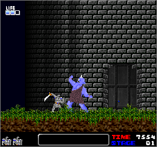
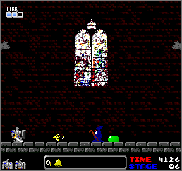
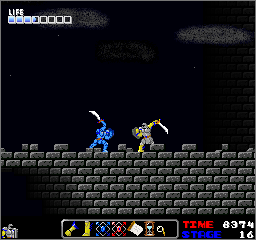

本ゲーム『Sample Action Game』は80年代のレトロゲームテイスト感のあるシンプルなアクションゲームとなります。
Sample Action GameはJava言語、Rust言語で作成されており、様々なプラットフォームで実行が可能となります。
- [旧バージョン]はJavaのVM環境さえあればどのプラットフォームでも実行可能。
- [新バージョン]は指定プラットフォーム版で実行可能。
Sample Action Gameはプレイヤーとなる騎士を操り、このプレイヤーの持つ剣と盾を使いながら20以上ある様々なステージをクリアして進む、面クリアタイプのアクションゲームとなります。
ステージには鍵と扉があり、鍵を用いて扉を開いて次のステージに進みます。
各ステージにはパワーアップアイテムとなる宝箱が存在し、これを発見しながらプレイヤーをパワーアップさせ、ステージを攻略していくことがポイントとなります。
(全てを入手しなくてもエンディングまでは行くことは可能です)
Sample Action Gameの特徴は、
- 敵キャラクターとのヒット&アウェイを重視したアクション。
- パワーアップアイテムを入手するためにもアクション。
- 80年代のアーケードゲームのような辛口の難易度。
- アイテムの入手具合や攻略具合によるマルチエンディング方式。
といったものがあり、ゲームプレーを盛り上げてくれます。
Sample Action Gameは、
- フリーウェアとなります。
- 著作権放棄はしません。著作権はにあります。
- アーカイブを改変しない限り転載、再配布自由となります。
- 無保証となります。つきましてはプログラムの実行は必ず自己責任でお願いします。
本ゲームのプレーによる不具合についていかなる責任も負わないものとします。
となります。

【新バージョン (Rust版)】
Sample Action GameはRustアプリケーションにて作成されています。
プレー環境は Windows11, Linux (X11)となります。
2024年以降のPC環境であれば、ほぼ動くと思います。
【旧バージョン (Java版)】
Sample Action GameはJavaアプリケーションにて作成されています。
プレー環境は『Java 2 Platform, Standard Edition 5.0 (J2SE 5.0)(Java 1.5.0_xx)』～ 8までのVMが実行できる環境が必要となります。
【注意！】Java SE 9より、アーキテクチャーが大きく変わり、プログラムが実行できない状態になりました。
Windows [XP／2000] OS上での起動をおおよその目安とした必要ハードウェア構成は、
- Pentium 1.2GHz 以上。
- メモリ256MB 以上。
- Mobile Intel 916GB/GMS,910GML チップセット ビデオカード VRAM 128MB 程度。
この際、画面の発色数は32bit(フルカラー)にしてください。
一部のJavaのグラフィック処理の仕様で正しい発色が行われない場合があります。
があれば、サクサク動くようです。(2003年以降に発売されているPCであれば、大抵クリアできそうです)
本ゲームは描画処理に依存する箇所が多いので、ビデオ周りがしっかりしていない場合、CPUクロックがいくら速くても処理がおかしくなるケースがあります。
(※2006/11 このハードウェア環境でFedora Core等のLinux環境では重過ぎて実用に耐え兼ねない状況でした…)
【旧バージョン (Java版)】
2006/11現在、Sample Action GameはBGMがありません。いずれ作成する予定ですが、リリース時期は未定です。
(製作者が思い出したようにやる気になり次第といった形となります。 << 多分もう無理。(^^ゞ)
【新バージョン (Rust版)】にはBGMがあります。
Sample Action Gameの難易度は割りと高めに設定されています。
難易度の目安は以下のゲームをおおよそとしてください。
| ファミコン | 悪魔城ドラキュラ(初代) | [コナミ] |
| ファミコン | ロックマン(初代) | [カプコン] |
| ファミコン | ストリートファイター2010 | [カプコン] |
| アーケード | ドルアーガの塔 | [ナムコ] |
| アーケード | 魔界村(初代) | [カプコン] |
| アーケード | アルゴスの戦士 | [テクモ] |
どのゲームも難易度が高いとされているゲームですが、とても素晴らしいバランスのヒット&アウェイを持っており、本ゲームはこれらのゲームバランスをお手本にしています。